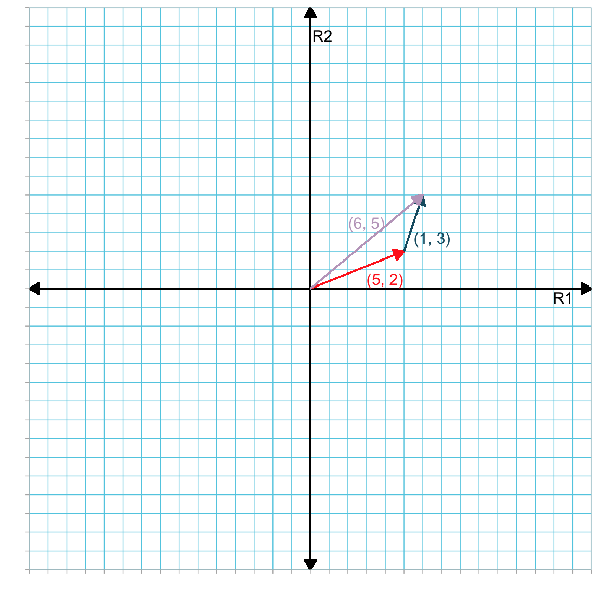
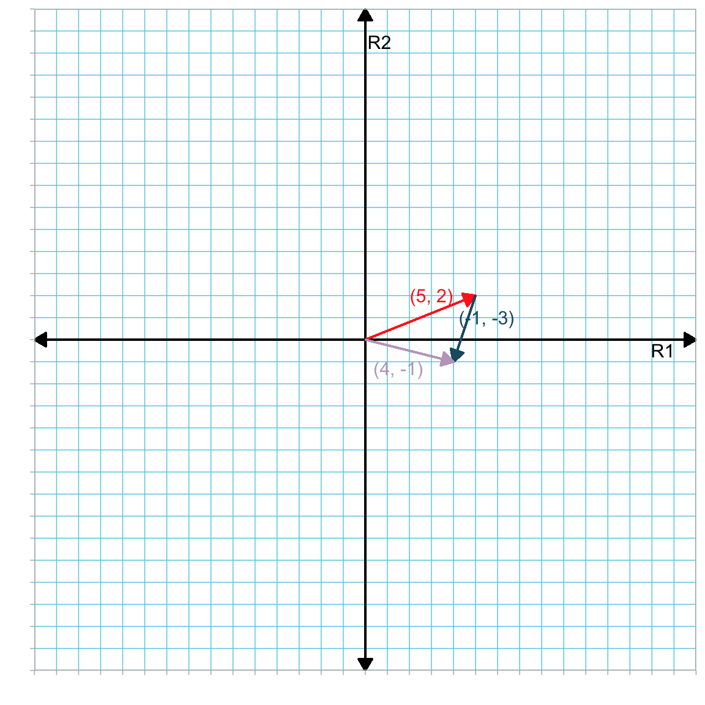
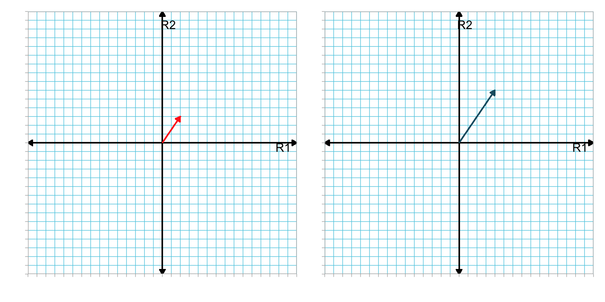
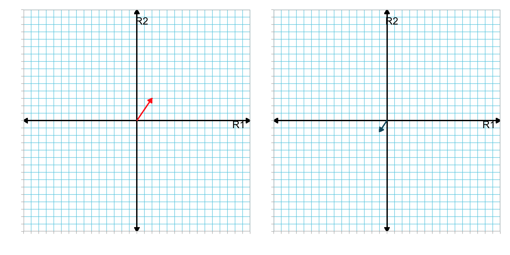

3 Vector Operations
In this chapter you will learn about some of the common arithmetic operations (addition, subtraction, and multiplication) that can be performed with vectors. As in the previous chapter, you will also be introduced to the geometry of these vector operations in 2-dimensional space.
3.1 Vector Addition and Subtraction
Vectors can be added together if they have the same dimensions (i.e., they have the same number of elements and are both row or column vectors). To add two vectors, each of length n, together, we sum the corresponding elements in the vectors. For example, consider the column vectors a and b, where,
\[ \mathbf{a} = \begin{bmatrix}5 \\ 2\end{bmatrix} \qquad \mathbf{b} = \begin{bmatrix}1 \\ 3\end{bmatrix} \]
Since both vectors have dimensions \(2 \times 1\), we can compute the sum of these vectors as:
\[ \begin{split} \mathbf{a} + \mathbf{b} &= \begin{bmatrix}5 \\ 2\end{bmatrix} + \begin{bmatrix}1 \\ 3\end{bmatrix} \\[2ex] &= \begin{bmatrix}5 + 1 \\ 2 + 3\end{bmatrix} \\[2ex] &= \begin{bmatrix}6 \\ 5\end{bmatrix} \end{split} \]
Note that the resulting vector is a column vector with two elements, the same as the vectors we summed together. In general, if we sum two n-dimensional column vectors, x and y, the resulting vector will also be an n-dimensional column vector:
\[ \begin{split} \mathbf{x} + \mathbf{y} &= \begin{bmatrix}x_1 \\ x_2 \\ x_3 \\ \vdots \\ x_n\end{bmatrix} + \begin{bmatrix}y_1 \\ y_2 \\ y_3 \\ \vdots \\ y_n\end{bmatrix} \\[2ex] &= \begin{bmatrix}x_1 + y_1 \\ x_2 + y_2 \\ x_3 + y_3 \\ \vdots \\ x_n + y_n\end{bmatrix} \end{split} \]
This process is similar for summing two n-dimensional row vectors, except the resulting vector will be an n-dimensional row vector.
3.1.1 Geometry of Adding Vectors
Geometrically, adding two vectors, say a and b, is equivalent to drawing vector b so that its tail is placed at the head of vector a. Then the sum is the new vector that originates at vector a’s tail and terminates at vector b’s head. Figure 3.1 geometrically shows the sum of the following vectors:
\[ \mathbf{a} = \begin{bmatrix} 5 \\ 2 \end{bmatrix} \qquad \mathbf{b} = \begin{bmatrix} 1 \\ 3 \end{bmatrix} \qquad \mathbf{a}+\mathbf{b} = \begin{bmatrix} 6 \\ 5 \end{bmatrix} \]
3.1.2 Vector Subtraction
To subtract vector b from vector a, we subtract the corresponding elements in vector b from those in vector a. For example, working with our previously defined vectors,
\[ \begin{split} \mathbf{a} - \mathbf{b} & = \begin{bmatrix} 5 \\ 2 \end{bmatrix} - \begin{bmatrix} 1 \\ 3 \end{bmatrix} \\[2ex] &= \begin{bmatrix} 5-1 \\ 2 - 3 \end{bmatrix} \\[2ex] &= \begin{bmatrix} 4 \\ -1 \end{bmatrix} \end{split} \] Since subtraction is equivalent to adding the inverse, subtracting the elements of b from a is equivalent to adding the inverted elements of b to the elements of a (where “inverting the elements” means switching the sign on each element). For example,
\[ \begin{split} \mathbf{a} - \mathbf{b} & = \mathbf{a} + -\mathbf{b} \\[2ex] &= \begin{bmatrix} 5 \\ 2 \end{bmatrix} + \begin{bmatrix} -1 \\ -3 \end{bmatrix} \end{split} \]
Figure 3.2 geometrically shows the operation of vector subtraction by adding the inverse of b to a.

3.1.3 Properties of Vector Addition and Subtraction
In vector addition, since each corresponding element is added, vector addition satisfies both the commutative and associative properties. That is,
\[ \mathbf{a} + \mathbf{b} = \mathbf{b} + \mathbf{a} \]
and
\[ \begin{split} \mathbf{a} + (\mathbf{b} + \mathbf{c}) &= (\mathbf{a} + \mathbf{b}) + \mathbf{c} \\[2ex] &= \mathbf{a} + \mathbf{b} + \mathbf{c} \end{split} \]
Convince yourself these two properties are satisfied using the following vectors.
\[ \mathbf{a} = \begin{bmatrix}5 \\ 2\end{bmatrix} \qquad \mathbf{b} = \begin{bmatrix}1 \\ 3\end{bmatrix} \qquad \mathbf{c} = \begin{bmatrix}2 \\ 0\end{bmatrix} \]
Since we can re-write vector subtraction as vector addition, these same conditions and properties also apply for vector subtraction.
3.2 Vector–Scalar Multiplication
When a vector is multiplied by a scalar, each element of the vector is multiplied by the value of the scalar. Consider the following vector a and scalar \(\lambda\),
\[ \mathbf{a} = \begin{bmatrix}2 \\ 3 \\ 0 \\ -1\end{bmatrix} \qquad \lambda=3 \]
Multiplying a by \(\lambda\) gives:
\[ \begin{split} \lambda\mathbf{a} &= 3\begin{bmatrix}2 \\ 3 \\ 0 \\ -1\end{bmatrix} \\[2ex] &= \begin{bmatrix}3 \times 2 \\ 3 \times 3 \\ 3 \times 0 \\ 3 \times -1\end{bmatrix} \\[2ex] &= \begin{bmatrix}6 \\ 9 \\ 0 \\ -3\end{bmatrix} \end{split} \]
This same method applies to row vectors. Scalars may be fractions, negative numbers, or unknowns. For example, if the scalar \(\gamma\) is an unknown scalar, then
\[ \gamma\mathbf{a} = \begin{bmatrix}2\gamma \\ 3\gamma \\ 0 \\ -1\gamma\end{bmatrix} \]
3.2.1 Division by a Scalar
Technically, division is undefined for vectors. However, if we are dividing by a scalar, we can multiply the vector by the scalar’s reciprocal. For example, using our previously defined vector a and scalar \(\lambda\),
\[ \mathbf{a} \div \lambda \quad \mathrm{does~not~exist} \]
But, we can multiply by the reciprocal of \(\lambda\), namely \(\dfrac{1}{\lambda}\). For example, using the values from our previous example:
\[ \begin{split} \mathbf{a} = \begin{bmatrix}2 \\ 3 \\ 0 \\ -1\end{bmatrix} \quad &\mathrm{and} \quad \lambda = 3 \\[2ex] \frac{1}{\lambda}\mathbf{a} &= \frac{1}{3}\begin{bmatrix}2 \\ 3 \\ 0 \\ -1\end{bmatrix} \\[2ex] &= \begin{bmatrix} \frac{2}{3} \\ 1 \\ 0 \\ -\frac{1}{3}\end{bmatrix} \end{split} \]
3.2.2 Geometry of Vector–Scalar Multiplication
Consider the product \(\lambda \mathbf{a}\) where,
\[ \lambda = 2 \quad \mathrm{and} \quad \mathbf{a} = \begin{bmatrix} 2 \\ 3 \end{bmatrix} \]
The product is
\[ \begin{bmatrix} 4 \\ 6 \end{bmatrix} \]
To show what happens geometrically when we multiply a vector by a scalar, let’s examine a plot of the original vector and the product.

Multiplying vector a by 2 doubled its length. However the direction of the new vector is the same as the original. In general, multiplying a vector by a positive scalar changes the length of a vector but not the direction. If it is multiplied by a negative scalar, not only does the length of the resulting vector change, but its direction is \(180^\circ\) from the original. For example, Figure 3.4 shows vector a and the vector \(\lambda \mathbf{a}\) where \(\lambda = -0.5\).

The product vector is half the length of the original and is pointed in the complete opposite direction.
3.3 Vector–Vector Multiplication: Dot Product
For two column vectors, a and b each having n elements, the dot product (i.e., scalar product) is defined as:
\[ \mathbf{a} \bullet \mathbf{b} = \sum_{i=1}^n a_ib_i \]
In other words, the dot product is calculated by multiplying together the corresponding elements of each vector, and summing those products. Consider the vectors,
\[ \mathbf{a} = \begin{bmatrix}5 \\ 4 \\ 7 \\ 2\end{bmatrix} \qquad \mathbf{b} = \begin{bmatrix}1 \\ 0 \\ -1 \\ 2\end{bmatrix} \]
The dot product, or \(\mathbf{a} \bullet \mathbf{b}\), is calculated as:
\[ \begin{split} \mathbf{a} \bullet \mathbf{b} &= 5(1) + 4(0) + 7(-1) + 2(2) \\[2ex] &= 2 \end{split} \]
Remember that the result of a dot product is a scalar.
3.3.1 Re-visiting Vector Length
Recall that to find the length of a vector a with n-dimensions:
\[ \lvert\lvert \mathbf{a} \rvert\rvert = \sqrt{a_1^2 + a_2^2 + a_3^2 + \ldots + a_n^2} \]
The sum under the square root is equivalent to computing the dot product of a with itself (i.e., \(\mathbf{a} \bullet \mathbf{a}\)). Therefore, the length of an n-dimensional vector a can be found by computing the square root of the dot product between a and itself:
\[ \lvert\lvert \mathbf{a} \rvert\rvert = \sqrt{\mathbf{a} \bullet \mathbf{a}} \]
3.3.2 Dot Products Using the Special Vectors
In the previous chapter we introduced several special vectors, including zero vectors, ones vectors, and elementary vectors. It is useful to explore what happens when one of these special vectors is used to calculate an dot product.
Consider finding the dot product between an n-dimensional vector a and an n-dimensional zero vector 0:
\[ \begin{split} \mathbf{a} \bullet \mathbf{0} &= \begin{bmatrix} a_1 \\ a_2 \\ a_3 \\ \vdots \\ a_n \end{bmatrix} \bullet \begin{bmatrix} 0 \\ 0 \\ 0 \\ \vdots \\ 0 \end{bmatrix}\\[2ex] &= a_1(0) + a_2(0) + a_3(0) + \ldots + a_n(0) \\[2ex] &= 0 \end{split} \]
The dot product is 0. Now, consider finding the dot product between an n-dimensional vector a and an n-dimensional ones vector 1:
\[ \begin{split} \mathbf{a} \bullet \mathbf{1} &= \begin{bmatrix} a_1 \\ a_2 \\ a_3 \\ \vdots \\ a_n \end{bmatrix} \bullet \begin{bmatrix} 1 \\ 1 \\ 1 \\ \vdots \\ 1 \end{bmatrix}\\[2ex] &= a_1(1) + a_2(1) + a_3(1) + \ldots + a_n(1) \\[2ex] &= \sum_{i=1}^n a_i \end{split} \]
Notice that the dot product here is simply the sum of the elements in a. Because of this property, ones vectors are also sometimes referred to as sum vectors.
Next, consider finding the dot product between an n-dimensional vector a and an n-dimensional elementary vector, say \(\mathbf{e}_1\) in which the first element is 1 and the rest are 0:
\[ \begin{split} \mathbf{a} \bullet \mathbf{e}_1 &= \begin{bmatrix} a_1 \\ a_2 \\ a_3 \\ \vdots \\ a_n \end{bmatrix} \bullet \begin{bmatrix} 1 \\ 0 \\ 0 \\ \vdots \\ 0 \end{bmatrix}\\[2ex] &= a_1(1) + a_2(0) + a_3(0) + \ldots + a_n(0) \\[2ex] &= a_1 \end{split} \]
Notice that the dot product here is simply the same as the first element in a. In general, the dot product between an n-element column vector, a, and an n-element elementary vector, \(\mathbf{e}_i\) with element \(i=1\), is:
\[ \mathbf{a} \bullet \mathbf{e}_i = a_i \]
3.4 Vector Operations Using R
We can also carry out these vector operations using R. Below we show how to carry out the operations of vector addition and vector subtraction.
# Create vectors
a = matrix(data = c(5, 2), ncol = 1)
a [,1]
[1,] 5
[2,] 2b = matrix(data = c(1, 3), ncol = 1)
b [,1]
[1,] 1
[2,] 3# Vector addition
a + b [,1]
[1,] 6
[2,] 5# Vector subtraction
a - b [,1]
[1,] 4
[2,] -1Multiplication of a vector by a scalar is carried out using the * operator. This operator carries out element-wise multiplication; in this case it multiplies each element in the vector by the given scalar.
# Create vectors
a = matrix(data = c(2, 3, 0, -1), ncol = 1)
a [,1]
[1,] 2
[2,] 3
[3,] 0
[4,] -1# Multiplication by 3
3 * a [,1]
[1,] 6
[2,] 9
[3,] 0
[4,] -3# Division by 3 (this multiplies each element by the reciprical)
a / 3 [,1]
[1,] 0.6666667
[2,] 1.0000000
[3,] 0.0000000
[4,] -0.3333333Lastly, although there is no dot product operator, we can mimic this function by using the elemement-wise multiplication operator to find the product of the corresponding elements of two vectors, and then use the sum() function to add those products together.
# Create vectors
a = matrix(data = c(5, 4, 7, 2), ncol = 1)
a [,1]
[1,] 5
[2,] 4
[3,] 7
[4,] 2b = matrix(data = c(1, 0, -1, 2), ncol = 1)
b [,1]
[1,] 1
[2,] 0
[3,] -1
[4,] 2# Element-wise multiplication
a * b [,1]
[1,] 5
[2,] 0
[3,] -7
[4,] 4# Compute dot product
sum(a * b)[1] 2# Compute length of a using dot product
sqrt(sum(a * a))[1] 9.69536Exercises
Consider the following vectors:
\[ \mathbf{a} = \begin{bmatrix}1 \\ 2 \\ 4 \end{bmatrix} \qquad \mathbf{b} = \begin{bmatrix}2 \\ 1 \\ -1\end{bmatrix} \qquad \mathbf{c} = \begin{bmatrix}5 \\ 2 \\ 3 \end{bmatrix} \qquad \mathbf{d} = \begin{bmatrix}2 \\ 1 \\ 0 \end{bmatrix} \qquad \mathbf{e} = \begin{bmatrix}1 \\ 3 \\ 2 \end{bmatrix} \]
- Find \(\mathbf{a}\bullet\mathbf{b}\).
- Find \(\mathbf{c}\bullet\mathbf{c}\).
- Find \(\mathbf{d}^{\intercal}\mathbf{e}\) and \(\mathbf{e}^{\prime}\mathbf{d}\)
Create a 2-dimensional orthogonal reference system. Show the following vector operations on that system.
- \(\mathbf{x}+\mathbf{y}\) where \(\mathbf{x} = \begin{bmatrix}2 \\ -1 \end{bmatrix}\) and \(\mathbf{y} = \begin{bmatrix}-3 \\ 2 \end{bmatrix}\)
- \(3\mathbf{z}\) where z is a unit vector in which all the elements are equal.
Students’ scores on two exams ranged from 32 to 98 out of a possible 100 points on both exams. The scores for six students are shown below for Exam 1 (x) and Exam 2 (y).
\[ \mathbf{x} = \begin{bmatrix}56 \\ 64 \\ 32 \\ 88 \\ 90 \\ 79\end{bmatrix} \qquad \mathbf{y} = \begin{bmatrix}50 \\ 69 \\ 51 \\ 98 \\ 87 \\ 70\end{bmatrix} \]
- Determine the total score for each student by finding \(\mathbf{z} = \mathbf{x} + \mathbf{y}\).
- Determine the mean score for each student by finding \(\frac{1}{2} \mathbf{z}\).
- If the students took a third exam, and the scores for the same six students were presented in vector w, how would you write the algebraic expression (using vector notation) to obtain the students’ mean scores for all three exams?
- If the mean score on Exam 3 was 60, write the algebraic expression (using vector notation) to find the six students’ mean deviation scores on Exam 3.